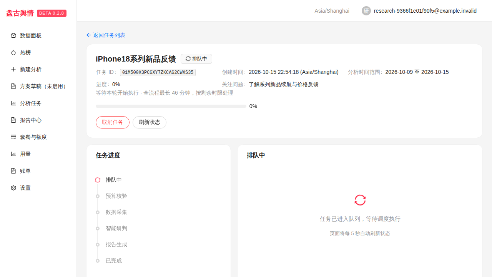
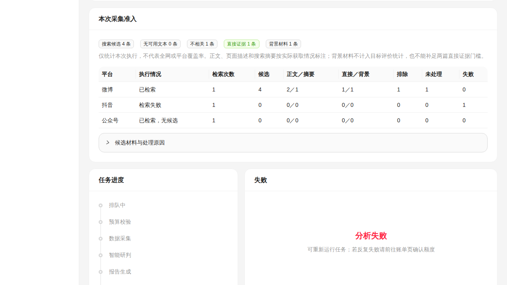

这是隔离环境的真实供应商调用记录，尚不是生产发布验收。100 条参考文本为开发阶段独立合成，期望标签待人工确认；不能称作真实文章、人工标注准确率或真实平台覆盖。当前生产仍是此前不完整的 92e1005 基线。
实际配置为 GLM-5.3-Flash，供应商返回模型名 glm-5.3-flash。16,384 与 32,768 输出参数均被接受，thinking.enabled 及 JSON/流式响应可用；响应返回真实 prompt/completion 和 reasoning_tokens。官方文档列出 1M 上下文、128K 最大输出，运行配置使用保守十进制上限；本次小请求不证明已实测最大上下文。
默认 max 推理中，主题规划耗时 97.424 秒、思考 5,042 token；相关性两个批次耗时 65.101 与 166.592 秒，第三批触及语义阶段 240 秒上限，故该次没有完整精确率结果。GLM-5.3 系列官方文档要求开启思考，支持 low/high/max；不支持 disabled。随后以 enabled+low 做受控参数对照，输出上限保持原值。
| 主题 | 规划耗时 | 50 条语义判定耗时 | 实际调用 |
|---|---|---|---|
| iPhone18 系列 | 6.877 秒 | 39.206 秒 | 8 次（含两次输出参数探针） |
| 雅阁后排舒适性 | 3.674 秒 | 36.012 秒 | 6 次 |
对照使用 b884c5f 的已验证客户端与隔离数据库，在测试边界显式注入 low 参数；此覆盖写在证据元数据中，不能冒充该 SHA 已自带相同参数。开发代码随后补入 query plan/relevance 的同等参数，并增加实际 /search 接口回归；最终交付仍需最新 SHA 的托管测试与完整 Bocha 报告验收。DeepSeek、MiniMax 和未知模型不接收 GLM 专属字段。
共 100 条全部完成：direct 真阳性 29，假阳性 0，假阴性 1；直接证据精确率 100%，召回率 96.67%。四分类总体一致率 86%，存在 14 处分歧，主要是背景材料被保守排除。direct 指标达到设计数值目标，人工标签门禁仍未完成。来源与日期硬边界由独立入口/Go/PG 合约测试验证，不能从本合成集推导线上越界率。
| 开发期望／模型输出 | direct | context | irrelevant | uncertain |
|---|---|---|---|---|
| direct | 29 | 0 | 0 | 1 |
| context | 0 | 9 | 11 | 0 |
| irrelevant | 0 | 0 | 30 | 0 |
| uncertain | 0 | 0 | 2 | 18 |
design-001 只提 iPhone 18 Pro，判 direct；design-016“雅阁后座靠背偏直，长途乘坐觉得累”未逐字出现“后排／舒适性”，判 direct，均有逐字原文和位置绑定。未修改期望标签来消除误差。
| ID | 合成原文 | 期望 | 输出 | 模型理由 |
|---|---|---|---|---|
| design-015 | iPhone 18 Pro短期试用：相机启动快，晚上拍孩子依然有运动模糊。 | direct | uncertain | 提到iPhone 18 Pro短期试用，但内容是相机表现，未涉及续航、手感、价格或反馈，关注点不匹配。 |
| design-034 | 苹果智能手机近年销量变化，属于行业背景，没有iPhone18用户评价。 | context | irrelevant | 行业销量背景，无iPhone18相关评价或关注点。 |
| design-036 | iPhone17 Pro镜头配置回顾，没有评价iPhone18系列表现。 | context | irrelevant | iPhone17 Pro镜头回顾，不评价iPhone18系列。 |
| design-038 | iPhone17 Max老用户如何选择换机，文章只列当前设备的不足。 | context | irrelevant | iPhone17 Max用户换机考量，仅列旧机不足，无iPhone18信息。 |
| design-039 | 苹果供应链投资概况，文末提到市场关注iPhone18，不包含产品体验。 | context | irrelevant | 供应链投资概况，仅市场关注提及，无产品体验或价格续航反馈。 |
| design-041 | 雅阁本月销量增长，文章只统计销量，没有乘坐体验。 | context | irrelevant | 仅为销量统计，无任何乘坐体验，按非假设排除。 |
| design-043 | 雅阁经销商优惠价格公布，没有后排评价。 | context | irrelevant | 仅经销商价格信息，明确无后排评价。 |
| design-045 | 雅阁新款外观采用新的尾灯设计，没有乘坐反馈。 | context | irrelevant | 外观尾灯设计，无乘坐反馈。 |
| design-046 | 雅阁售后网点数量增加，属于品牌服务信息。 | context | irrelevant | 售后网点属品牌服务信息，与后排乘坐无关。 |
| design-047 | 雅阁保值率统计，仅提供二手市场背景。 | context | irrelevant | 保值率为二手市场背景，与乘坐感受无关。 |
| design-048 | 雅阁动力系统参数解读，没有第二排体验。 | context | irrelevant | 动力参数解读，明确无第二排体验。 |
| design-049 | 雅阁汽车生产基地扩产，文中只有产能信息。 | context | irrelevant | 生产基地产能信息，与乘坐评价无关。 |
| design-099 | 车主说后边有问题，未说明问题内容或目标车型。 | uncertain | irrelevant | 未说明问题内容且未明确指向雅阁，泛词'后边有问题'不能证明对象与后排舒适性相关。 |
| design-100 | 雅阁后排全文加载失败，请稍后重试。 | uncertain | irrelevant | 正文为加载失败提示，无任何关于雅阁后排乘坐感受的实际内容，不能作为已核验证据。 |
每个主题使用单独普通试用账户与真实 API 接纳的 run，模型调用通过实际授权、持久 outbox 和 PostgreSQL 用量桥。仅在隔离数据库设置受控采集状态，未修改财务流水；结束后走正常取消 API。没有生产用户任务重跑、管理员豁免、实际邮件或短信。缺少已核验单价的费用保留待核算，不伪造零成本。
人工核验稿：100 条原始样本与开发期望；完整逐条判定及实际 token/供应商请求标识：JSON 证据。
此前 a77014e698e6e475017636269534da057b745b6b 的 托管工作流全部通过（含 62 个浏览器用例），此结果先于 query 推理参数修复。最新提交必须重新通过全部门禁。CentOS 已以服务账户 UID 991 验证固定 Chromium 启动及 JavaScript；完整真实 Bocha→正文→模型→报告、人工标签及正式 prod 制品部署仍待完成。

